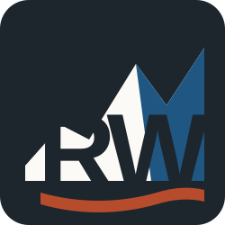
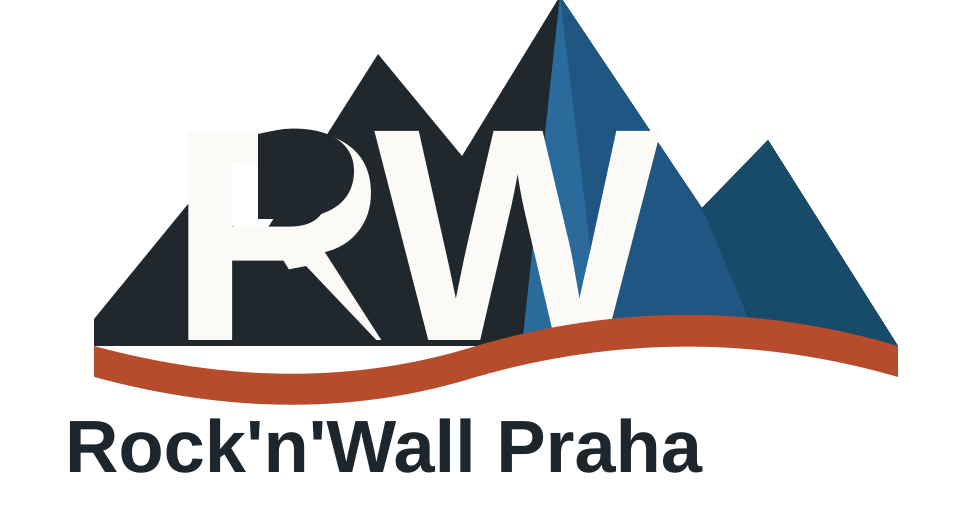

Začátečníci
Pro děti, které s lezením začínají nebo chtějí pravidelný bezpečný pohyb na stěně.

Rock'n'Wall Praha klubové lezecké kroužkyŠkolní rok 2026/2027

Pravidelné dětské kroužky a pololetní kurzy organizuje Rock'n'Wall Praha z.s. ve spolupráci s HUDY Boulder Karlín. Evidence, členství, platby, omluvy a docházka jsou vedené v klubovém systému KIS.
Kroužky
Kroužky jsou určené pro děti a mladé lezce, kteří chtějí pravidelně sportovat, zlepšovat pohyb, techniku lezení a bezpečný pohyb na boulderové stěně.
Pro děti, které s lezením začínají nebo chtějí pravidelný bezpečný pohyb na stěně.
Pro děti s předchozí zkušeností, které chtějí zlepšovat techniku, sílu a samostatnost.
Pro děti se zájmem o systematičtější trénink, závody a dlouhodobý sportovní růst.
Přihlášení
Přihlašování do kroužků pro školní rok 2026/2027 začíná 6. 7. 2026.
Platby
Platby za pravidelné klubové kroužky neprobíhají přes kredit v Memberzone. Po přihlášení a zařazení dítěte do skupiny obdrží rodič platební údaje v KIS.
Příjemce: Rock'n'Wall Praha z.s.
Účet klubu: 2703524029 / 2010
Variabilní symbol: podle pokynu z KIS
Členský příspěvek: 200 Kč / dítě / školní rok, zahrnutý v ceně kroužku
Evidence plateb: KIS a LP soft
Dobrovolný příspěvek: QR kód bez pevné částky. U plateb za kroužky používejte variabilní symbol z KIS.
Pro rodiče
Dítě přichází včas, ve sportovním oblečení a s pitím. Na lekci se řídí pokyny trenéra.
V prostoru HUDY Boulder Karlín platí provozní a bezpečnostní pravidla sportoviště. Klubové kroužky se zároveň řídí pravidly klubu.
Omluvy a docházka jsou řešené přes KIS podle pravidel konkrétní skupiny.
Dotazy ke klubovým kroužkům, členství a platbám posílejte na info@rocknwallpraha.cz.
Dokumenty
Veřejné dokumenty pro rodiče ke klubovým kroužkům, členství, platbám a ochraně osobních údajů.
Kontakt
Sportovní klub pro podporu dětského a mládežnického lezení, boulderingu a souvisejících pohybových aktivit.